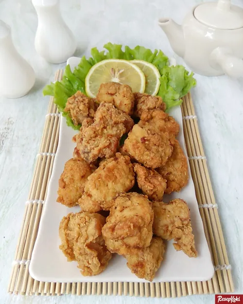

Resep Ayam Goreng Karage Renyah

Jika sering bersantap di gerai fastfood Jepang atau membeli produk olahan ayam frozen, pasti Anda sudah tidak asing dengan sajian ini. Chicken karage adalah fillet ayam balut tepung bumbu yang digoreng krispi.
Bagian ayam yang biasa digunakan yaitu bagian paha karena dagingnya lebih lembut dan juicy walau digoreng deepfry sampai garing luarnya.
Bahan Masakan (untuk 3 porsi)
- Fillet ayam, potong dadu besar - 300 gram
- Minyak untuk menggoreng - secukupnya
Bumbu Rendaman
- Susu cair - 60 ml
- Bawang putih, haluskan - 2 siung
- Jahe, haluskan - 1 cm
- Kecap asin - 1/2 sdt
- Garam - 1/4 sdt
- Merica - 1/4 sdt
- Kaldu bubuk - 1/4 sdt
Bahan Baluran
- Tepung terigu - 100 gram
- Tepung maizena - 50 gram
- Garam - 1/4 sdt
- Merica - 1/4 sdt
Cara membuat
- Dalam wadah, campur dan aduk rata semua bahan rendaman.
- Lumuri fillet ayam dengan bumbu rendaman hingga rata. Diamkan dan simpan di kulkas minimal 1 jam agar bumbu meresap.
- Dalam wadah, campur dan aduk rata semua bahan baluran.
- Panaskan minyak.
- Ambil ayam lalu gulingkan ke bahan baluran sambil ditekan-tekan hingga menempel. Goreng dalam minyak panas dengan api sedang hingga matang dan berwarna kecoklatan. Angkat dan tiriskan.
- Sajikan.